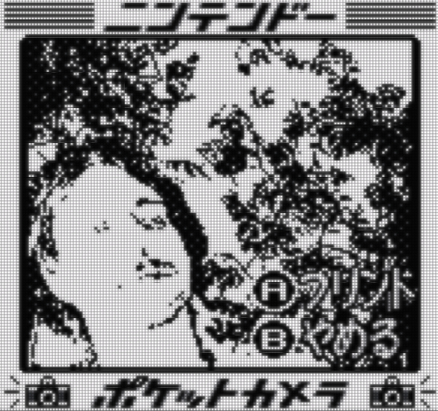

Austin East
games // software
github | itch | linkedin | emailAbout
Based in Seattle, WA. When not working in a text editor, can usually be found rock climbing. Proud cat father ᓚᘏᗢ
My latest game, VEX MAGE, is out now! Previously I worked on SWARM
Check out some of my other personal projects over @ itch.io